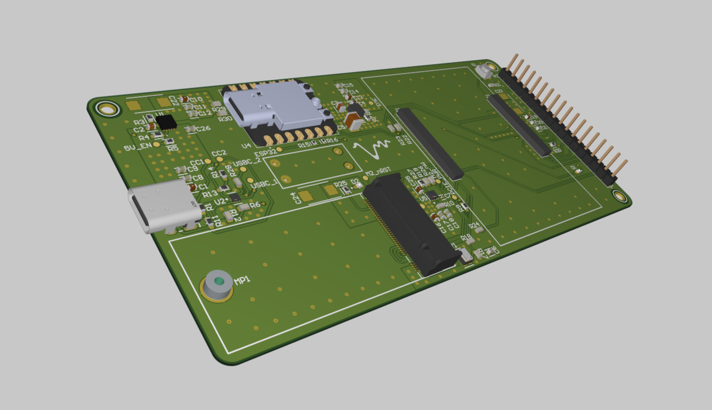
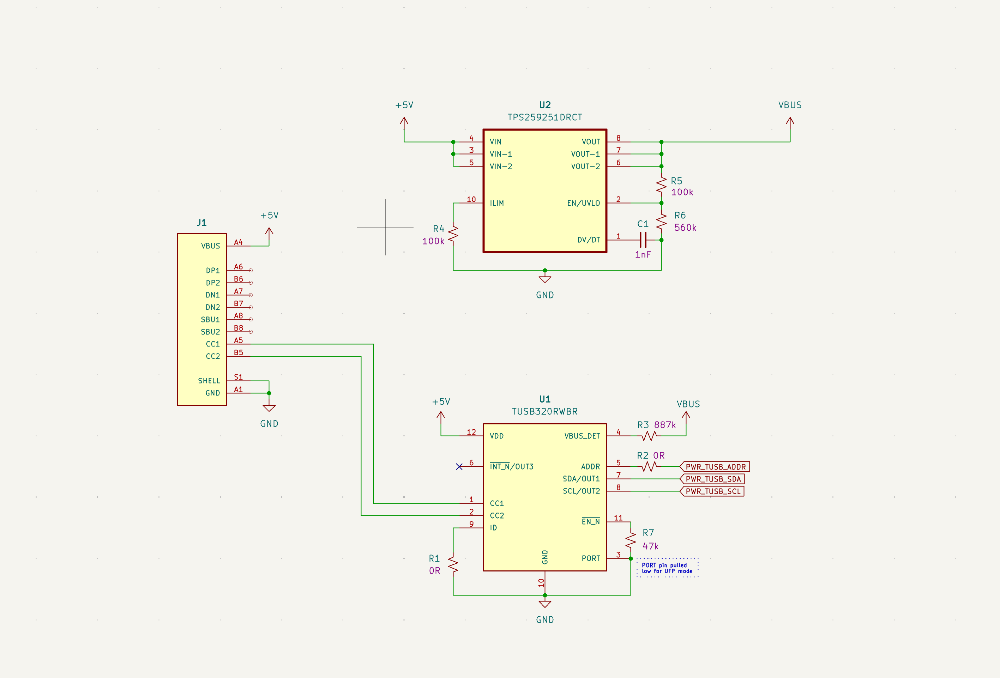

Projects

VocalPoint – Capstone Project
Leading electrical development and system architecture for a table-top microphone array Bluetooth device for hearing-aids. Designing electrical schematic and aided in PCB layout using Altium for a RPi CM5 carrier board with USB-C power, 3V3 buck converter, and PCIe connectors.

Mini Desk Mixer
WIP portable desk mixer built around a Teensy 4.1, SGTL5000 codec, and ESP32 Bluetooth output. Focused on SD-card playback, USB-C connectivity, and a hardware-only control surface for mixing and cueing. Additionally, focusing on exploring a clean and compact housing design for this standalone mixer.
EMG Hand Prosthetic
Designed a functional hand prosthetic prototype using EMG processing. Designed custom analog filter circuit to capture muscle signals from skin surface electrodes, outputting digital logic to an Arduino that processes these signals to actuate servo motors in a 3D-printed claw hand designed in SolidWorks.

Electroretinography Electrode Research
Research at UWaterloo's Nanoengineering Department synthesizing ERG electrodes with Au-Ca and Au-Pt nanoparticles. Investigating materials to optimize retinal neural response capture and reduce electrical noise, with focus on adaptability for diverse patient needs.

VAD Keyword Detector
Built a signal-processing voice activity and keyword detector using a custom VAD, MFCCs, and DTW instead of using any AI speech or keyword model. Practicing signal processing methods rather than training a classifier.

Mechanoreceptor Model
Developed Python simulation for SA-1 and FA-1 mechanoreceptors in the finger. Simulates receptor array behavior scanning over topographical surfaces, converting physical pressure to current response with visual 3D output.
Cardboard DJ Box
With a team of 3, we designed an interactive DJ set made from cardboard, equipped with actuators to mimic a professional DJ setup for a hackathon. This includes a turntable, mixer, and various effects, with hardware controls between microcontroller and SBC. Users can upload their song, and manipulate the cardboard components to create unique sounds and mixes.

Cadillac LYRIQ State Machine & Feature Override
Designed a hierarchical ADAS state machine in MATLAB/Simulink for the Cadillac LYRIQ as part of UWAFT's EcoCar competition. Modeled driving feature states (AIN, LCC, AP, CACC), converted the model to an RTMaps package, and validated state transitions using real CAN bus data from the vehicle.

CAD & Design Work
3D modeling and engineering design using SolidWorks and Onshape. Projects and work experience include device housing design, FEA analysis, aerodynamic modeling, and design for 3D printing and manufacturing.

Building a Deck in my Backyard
Built a backyard deck, hands-on construction project using hand saws, table saw, circular saw, and various power tools. Gained practical experience in wood cutting, joinery, and structural outdoor construction.